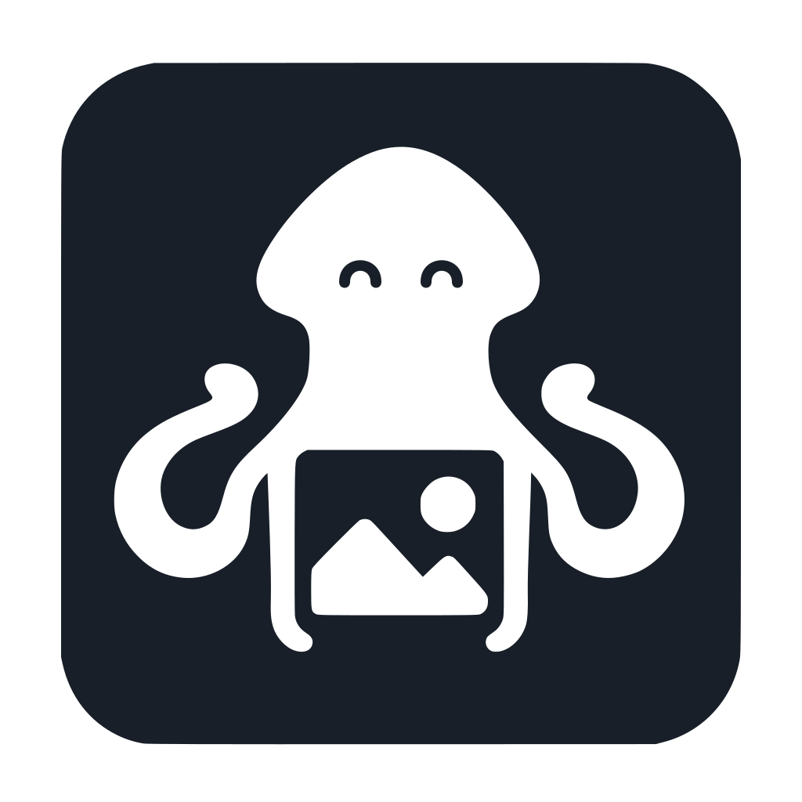

ImageSquid
Believe your eyes
ImageSquid is a local-first photo manager that exists to help people reclaim control of their visual memories, while providing clarity on AI use via full C2PA support.

Your library, your rules.
Free and open-source.
Full media ownership The files, the edits, and the meaning you’ve added.
Media ownership means more than just access to image files: it means retaining available descriptions, dates, edits, organization, relationships, and source context that give those images meaning.
ImageSquid aims to make independent media ownership convenient. Users should have a fast, capable application for finding, enhancing, enjoying, and sharing their collections across devices and operating systems.
Data portability Free to use. Free to move. Free to leave.
ImageSquid libraries remain usable offline, portable between providers, and exportable if users quit ImageSquid. Optional hosting and synchronization supports that freedom.
ImageSquid's business model is to offer all application features as free and open-source software and provide a freemium upgrade for ImageSquid.app backup and syncing service.
This is a similar approach to the Obsidian note management tool. Obsidian is free but closed source. With ImageSquid's open-source license users can clone the same software from our Git repo and host their own backup and sync infrastructure if they choose.
To be clear, ImageSquid users must be able to leave a hosting provider, work offline, recover from mistakes, and leave ImageSquid the app and the optional online service at any time without losing original media, subsequent enhancements or metadata enrichment.
This principle and its practical implementation is based heavily on the Personal Data Server primitive used in the AT Protocol architecture by platforms like Bluesky.
Long-term access A proper archive, without becoming an archivist.
ImageSquid is designed from the perspective of professional archival collections management. It adopts a long-term view of the stewardship, findability, usability, and trustworthiness of the digital files in the system's care.
Original media and its accumulated context are preserved using open archival standards so collections remain recoverable, understandable, and reusable over time.
A key component of this approach is the capability to use the files that ImageSquid stores on disk as the canonical data source. If any of the application layer or its indexes are corrupted or removed, the user will have the option to rebuild the application layer in full using the source files stored in OCFL (Oxford Common File Layout) objects.
OCFL is the digital archives industry's best practice for storing versioned files and inventories on disk so a collection remains inspectable and rebuildable with ordinary file tools, independent of ImageSquid's catalog or an online platform.
ImageSquid brings this discipline and professional design into everyday image management without requiring users to become archivists or system administrators.
Private AI processing Your models. Your provider. Your decision.
The actual AI inference models used in ImageSquid processing tasks and end-user features should remain the user's choice.
ImageSquid can connect to a local AI runner and open-source model (for example llama.cpp + Gemma 4) using the industry-standard OpenAI API format, or to the owner's own supported frontier-provider account; the user pays that provider directly. This is bring-your-own (BYO) inference. The AI Connections surface explains that arrangement, including that encrypted backup does not receive inference traffic and that a remote endpoint can read what the owner sends.